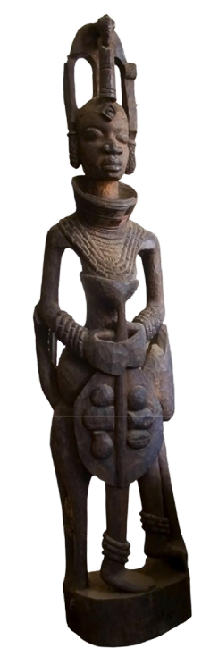

The Archives.
The University Archives domiciled in the library houses materials emanating from the University of Lagos since inception, from 1962 to the present.
A record of
the University.
The library preserves and makes available to researchers unique materials of enduring value to support teaching and research. The archives chronicle the history of the University of Lagos from inception in 1962 to the present.
It includes materials such as inaugural lectures and monographs series, correspondence, minutes, reports, photographs, maps, audiovisual materials, other university publications, and much more.
We have digitised some of our archival collection for ease of access. Please contact our Africana and Special Collection Librarian for help.
Rare, unique
and fragile.
The library’s special collections include rare, unique and fragile materials in varied formats and on a variety of topics including art, literature, mathematics, music, religion, law, history and culture, music and sound recordings and photographs.
Other materials include private collections of notable individuals donated or bequeathed to the University of Lagos Library. While items are available for use only to individuals conducting research on a related topic, access to the collection is usually under supervision.

The Museum
next door.
Over 123 artefacts of post independence Nigerian art, on the first floor of the Akintunde Ojo Building adjacent to the University Library.
Enter the museum